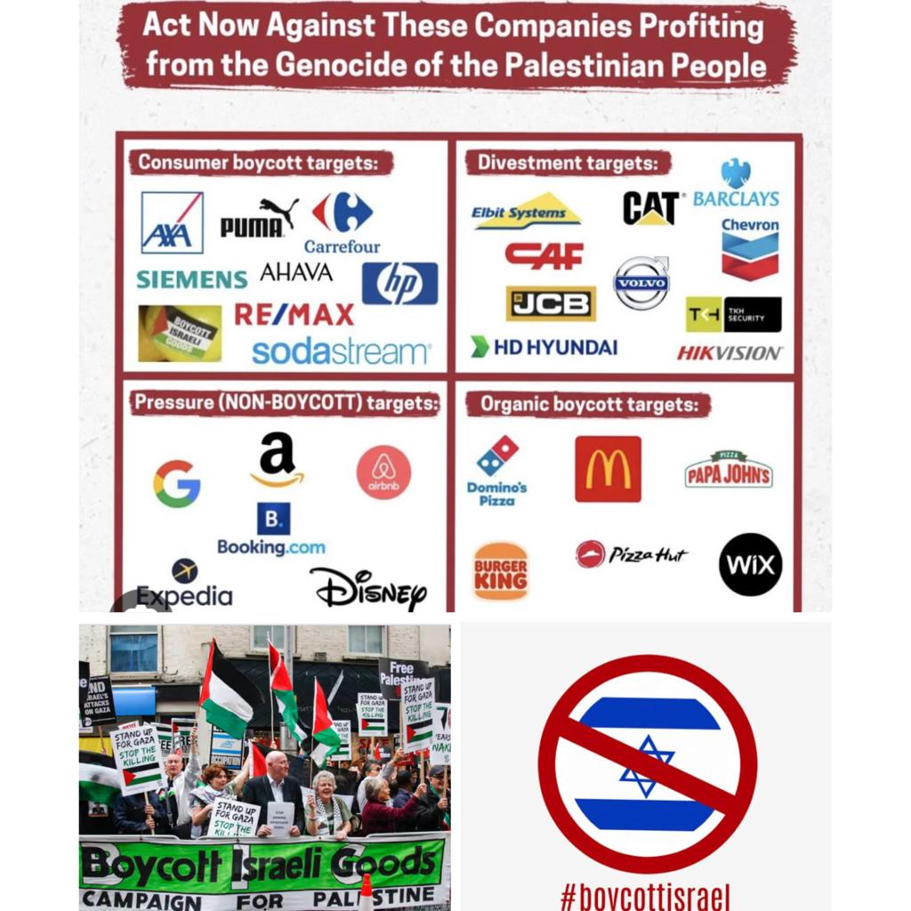

why should we boycott?
people should start boycotting literally anything that supports israel such as : snacks , food restaurants, drinks , clothing brands , tv shows , and etc. The reason behind such statement is because we are witnnessing a catstrophic scene that no human being should accept or support. the americans and the israelis are claiming that this is a response to what hamas did and that it's a fair war. well, if you wanna defend yourself against hamas you should do so by fighting hamas. what israel is doing is ethnic cleansing and absloute genocide. How is killing civlians , destroying houses, tearing families apart , bombing schools and hospitals ,and literally whiping a city out cosidered a fair fight or just defending yourself. A fair war should be between 2 armed sides and militaries. so the main reason behind boycotting is we are trying to harm the non-existing country( israel) withany way possible. we want to prevent any source of help. we aim to harm them economically , politically , and etc. we want to annilate their image infront of the whole world and show the world the real atrocious side of them. maybe we are not ending this genocide , but we are doing all we are capable of to harm this herendous non existing side (israel) even if it's by a small percentage.
